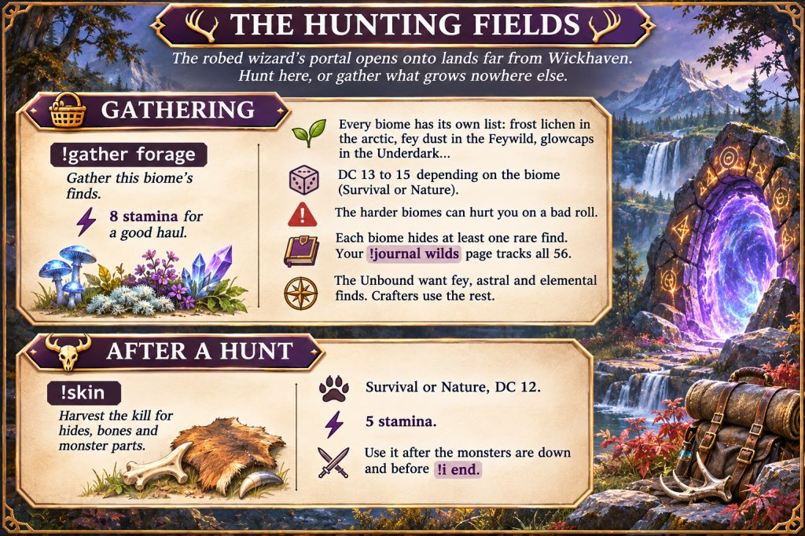

Hunting
Where the farmland gives way to wilderness, a robed wizard keeps a shimmering portal inside a circle of ancient stones. Step through, pick your ground, and bring something back.

How a hunt works
!hunt <biome> [difficulty]Rolls a random encounter for the biome channel you're in and adds the monsters to initiative.
!huntmapLoads a battle map for that biome. Run it before
!auto. Run it again to swap in a different map.!autoPlaces everyone on the map and runs the monsters.
!skinOnce the monsters are down and before the fight ends: harvest hides, bone and monster parts. Survival or Nature, DC 12, 5 stamina.
!huntendClaims your XP and clears the combat.
The fourteen grounds
Each biome has its own channel, its own maps and its own finds. !huntmap only pulls maps for the channel you're in: no desert maps in the Arctic.
Difficulty
Leave it off for a random one, or name it:
EasyMediumHardDeadly (2014 rules)
LowModerateHigh (2024 rules)
Hunting with friends? !hunt coastal -levels 2,3,4 sizes it for three players at levels 2, 3 and 4. No spaces after the commas.
Map tools
!huntmap list shows every map for the biome, and !huntmap grave finds Graveyard (partial names work). It uses croebh's Map Utilities, so !map and !move work as normal. !map help has the rest.
Gathering in the biomes
Every biome, its own list
Frost lichen in the Arctic, fey dust in the Feywild, glowcaps in the Underdark. !gather forage, 8 stamina for a good haul.
DC 13 to 15
Survival or Nature, depending on the biome. The harder biomes can hurt you on a bad roll.
56 to find
Each biome hides at least one rare find. !journal wilds tracks them all. The Unbound want fey, astral and elemental finds; crafters use the rest.
Encounter Generator by alpha983, monster data compiled by alij, lightly edited for the Chronicles of Thaleryn.